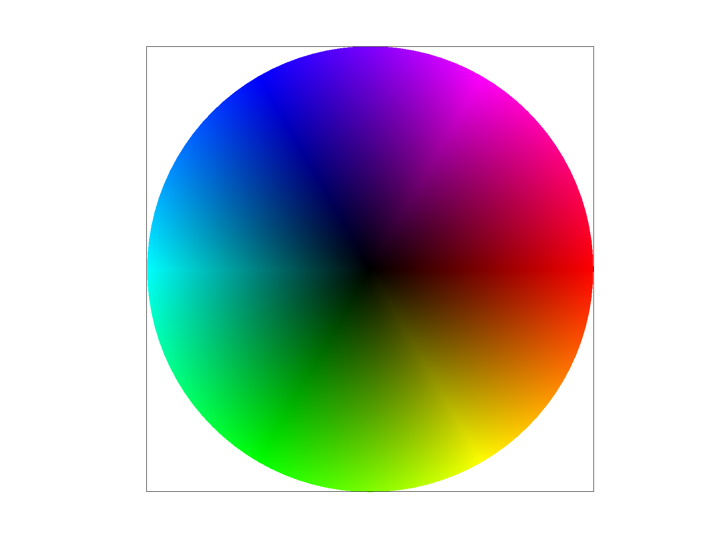
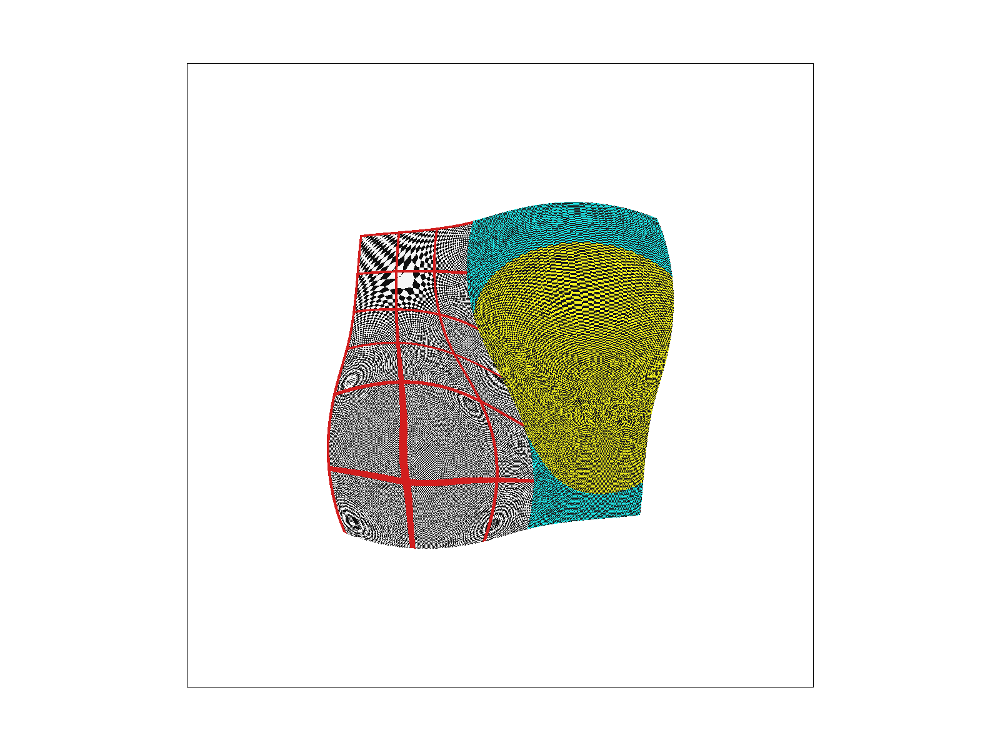

CS184/284A Fall 2026 Homework 1 Write-Up
Link to webpage: cal-cs184-student.github.io/hw1-klk-writeup
Link to GitHub repository: github.com/cal-cs184-student/hw1-klk
Overview
In this homework I built a software rasterizer that renders a simplified version of SVG files. It starts with the most basic step, which is deciding which pixels a single-color triangle covers. I do this with 3 edge functions over the triangle's bounding box. From there I added supersampling, which stores an \(n \times n\) grid of samples per pixel in a bigger sample buffer and averages them down at the end of the frame. This turns stair-stepped edges into smooth ones and stops thin slivers from breaking apart. Translate, scale, and rotate matrices in homogeneous coordinates let nested SVG groups combine into a figure I can pose. Barycentric coordinates come straight from the edge functions, and I use them to interpolate vertex colors and then texture coordinates across a triangle. Finally, texture mapping samples an image with nearest or bilinear pixel sampling, and mipmap level sampling picks the right resolution of the texture based on how fast \((u, v)\) changes across the screen. This removes the moiré patterns that show up when a detailed texture is shrunk down.
The most interesting thing to me is how much of the pipeline reuses one idea. The edge function that answers "is this sample inside?" also gives the barycentric weights. Those same weights interpolate colors, texture coordinates, and even the coordinates at neighboring pixels that decide the mip level. I also got a much better feel for aliasing. Supersampling, bilinear filtering, and mipmapping look like 3 different tricks, but each one is just a way of averaging over the area a pixel really covers instead of trusting a single point. Supersampling does it in screen space, bilinear does it for magnified textures, and mipmaps precompute it for minified ones.
Task 1: Drawing Single-Color Triangles
Algorithm
For each candidate pixel, my rasterizer checks if the center of the pixel is inside the triangle, and fills it if it is. Sample points sit at half-integer coordinates, so pixel \((x, y)\) is tested at \((x + 0.5,\ y + 0.5)\).
The inside test uses 3 edge functions. For an edge from vertex \(A\) to vertex \(B\) and a sample point \(P\), \[ E_{AB}(P) = (P_x - A_x)(B_y - A_y) - (P_y - A_y)(B_x - A_x). \] This is the 2D cross product of the edge direction and the vector from \(A\) to \(P\). It is 0 when \(P\) is exactly on the line through \(A\) and \(B\), and its sign tells me which side of the line \(P\) is on. I evaluate the 3 edges going around the triangle in order, \(P_0 \to P_1\), \(P_1 \to P_2\), \(P_2 \to P_0\). A sample is inside the triangle when all 3 values have the same sign.
There are 2 details to handle. First, the SVG vertices can be listed clockwise or counter-clockwise, which flips the sign of every edge function. Instead of reordering the vertices, I accept a sample when the 3 values are either all \(\geq 0\) or all \(\leq 0\), so both winding orders work. Second, using \(\geq\) and \(\leq\) instead of \(>\) and \(<\) means a sample exactly on an edge counts as inside, which is what the spec asks for.
When a sample passes, I call fill_pixel(x, y, color) to write the color into the sample buffer. At the end of the
frame, resolve_to_framebuffer() converts the float colors in the sample buffer into the 8-bit RGB framebuffer.
Efficiency: only the bounding box is checked
Before looping, I find the bounding box of the triangle using the min and max of the 3 x values and the 3 y values. I floor both corners to get integer pixel indices, then clamp them to \([0, \text{width}-1]\) and \([0, \text{height}-1]\) so triangles that hang off the screen never index outside the buffer. The double loop only visits pixels inside that box, so the work depends on the area of the bounding box instead of the whole framebuffer. This is the baseline the spec requires. The outer loop goes over rows and the inner loop goes over columns, so writes into the sample buffer are sequential in memory.
Result

basic/test4.svg at 1 sample per pixel, with the pixel inspector over the tip of the magenta sliver.
The triangle is thinner than a pixel there, so some pixel centers miss it and the sliver breaks into separate
pieces. This is the aliasing that Task 2 fixes.
Task 2: Antialiasing by Supersampling
Algorithm and data structures
Supersampling renders the scene at a higher resolution then averages it back down. Instead of testing one point per pixel, I subdivide a pixel into an \(n \times n\) grid of points inside every pixel, where \(n = \sqrt{\text{sample\_rate}}\) and keep every result. At the end of the frame, each pixel's final color is the mean of its samples. A pixel fully inside the triangle averages to the triangle color, a pixel fully outside stays the background color, and a pixel on the edge blends both the background and the triangle color, directly proportional to the number of samples the triangle covered.
The only data structure is sample_buffer, a std::vector<Color> of floating-point colors
that holds every sample for every pixel. Its size is width * height * sample_rate. I store all of a pixel's
samples next to each other, so sample \(s\) of pixel \((x, y)\) is at index
\[ (y \cdot \text{width} + x) \cdot \text{sample\_rate} + s, \qquad s = j \cdot n + i, \]
where \(i\) and \(j\) are the sub-column and sub-row inside the pixel. Keeping a pixel's samples together makes the averaging
step a short loop over consecutive memory.
Why supersampling helps
With just one sample per pixel, a pixel is either inside or outside of the triangle, so the edges are stair-stepped and features that are thinner than a pixel can be missed entirely. Supersampling approximates the true area coverage of each pixel, so edges become smooth gradients instead of hard steps and thin features leave a small trace in every pixel instead of just vanishing.
Changes to the rasterization pipeline
set_sample_rateandset_framebuffer_targetnow resizesample_buffertowidth * height * sample_rate. Both need to do this because either one can be called after the other.rasterize_trianglehas 2 new inner loops over \(i, j \in [0, n)\). The sample position is \((x + \frac{i + 0.5}{n},\ y + \frac{j + 0.5}{n})\). The 3 edge tests from Task 1 run on that point with no changes, and a hit writes the color straight into that sample's slot insample_buffer. At \(n = 1\) this is exactly the same as Task 1.fill_pixel, used by points and lines, now writes the same color into allsample_rateslots of the pixel. Without this, the black canvas border, which is drawn withrasterize_line, would get averaged with white samples and turn gray.resolve_to_framebufferadds up each pixel's samples, multiplies by1 / sample_rate, then converts each channel from a float in \([0, 1]\) to an 8-bit value inrgb_framebuffer_target.
clear_buffers did not need to change since it already fills the whole vector.
Results

|

|

|
The pixel inspector is over the same spot on the magenta sliver in all 3. At rate 1 every pixel is either magenta or white, and the sliver breaks into stair-stepped edges. At rate 4, each pixel has 4 chances to hit the triangle, so the gap closes and the edge pixels take on a lighter shade of pink, due to the averaging done in supersampling. At rate 16 the sliver is continuous and the edges fade into a smooth gradient from magenta to pink to white.
Task 3: Transforms
Implementation
The 3 transforms are \(3 \times 3\) matrices that act on points written in homogeneous coordinates \((x, y, 1)\). The
extra coordinate is what lets a matrix multiply do translation. A plain \(2 \times 2\) matrix cannot do this because it
always maps the origin to itself. The starter code's operator* turns each Vector2D into
\((x, y, 1)\), multiplies, then divides by the third component to get back to 2D.
rotate takes degrees, so I convert to radians before calling cos and sin. The
rotation is counter-clockwise in the usual math convention. Since screen and SVG coordinates have \(y\) pointing down, a
positive angle looks clockwise on screen, which matches the SVG spec.
Nested <g transform="..."> groups combine by multiplying their matrices from outer to inner, so the
innermost transform is applied to the shape first. With these 3 functions done, svg/transforms/robot.svg renders
exactly like the reference image.
My robot: a wave
I posed cubeman waving with his right arm. The original arms are rectangles centered on their own midpoints, so rotating
them in place would just spin each piece around its middle instead of around a joint. To get a proper joint, each piece uses
the same pattern: translate to the pivot, rotate, then translate the piece outward. The upper arm is wrapped in
translate(50 -40) to get to the shoulder, then rotate(-60) to swing it up, then
translate(40 0) so the rectangle extends away from the shoulder. The forearm sits inside that same rotated group.
It moves out to the elbow with translate(90 0), bends another rotate(-50), and is pushed out with
translate(35 0). Since the elbow group is nested inside the shoulder group, changing just the shoulder angle moves
the whole arm together. Sweeping the shoulder angle back and forth over time would make him wave.
my_robot.svg rendered at 16 samples per pixel. The right arm pivots at the shoulder and bends at the elbow.
The SVG file is here.
{kind=link}
Task 4: Barycentric coordinates
What barycentric coordinates are
Barycentric coordinates describe a point \(P\) inside a triangle as a weighted average of the 3 vertices: \[ P = \alpha P_0 + \beta P_1 + \gamma P_2, \qquad \alpha + \beta + \gamma = 1. \] Each weight measures how close \(P\) is to one vertex. At \(P_0\) the coordinates are \((1, 0, 0)\), at the midpoint of edge \(P_1 P_2\) they are \((0, \frac{1}{2}, \frac{1}{2})\), and at the center they are \((\frac{1}{3}, \frac{1}{3}, \frac{1}{3})\). Inside the triangle all 3 weights are in \([0, 1]\), and a point is outside when one of them goes negative. Geometrically, \(\alpha\) is the area of the small triangle \(P P_1 P_2\) divided by the area of the whole triangle, and the same goes for the others.
They are useful because once I have \((\alpha, \beta, \gamma)\) for a sample, I can interpolate any per-vertex value with the same weights. For colors, \[ C(P) = \alpha C_0 + \beta C_1 + \gamma C_2. \] The triangle below has a red, a green, and a blue vertex. Every pixel inside is a blend based on its barycentric weights, so the color shifts smoothly from red at the top to green and blue at the bottom corners, and the center is a mix of all 3.

Implementation
The 3 edge functions from Task 1 are already proportional to the barycentric coordinates. The edge function for edge \(P_1 P_2\) is 0 along that edge and grows linearly toward \(P_0\), which is exactly how \(\alpha\) behaves. So inside the sampling loop, for each sample that passes the inside test I compute \[ \alpha = \frac{E_{12}}{E_{01} + E_{12} + E_{20}}, \qquad \beta = \frac{E_{20}}{E_{01} + E_{12} + E_{20}}, \qquad \gamma = \frac{E_{01}}{E_{01} + E_{12} + E_{20}}, \] where each weight uses the edge opposite its vertex. The denominator is twice the signed area of the triangle. For a clockwise triangle the numerator and denominator flip sign together, so the ratios are correct for either winding order. The interpolated color \(\alpha C_0 + \beta C_1 + \gamma C_2\) is then written into the sample buffer at the same slot the single-color rasterizer would use, so supersampling from Task 2 still works with no changes.
Result

svg/basic/test7.svg with default settings at sample rate 1. The wheel is made of 96 thin triangles that
share a black center vertex, with the outer vertices stepping around the color wheel. Interpolating across each wedge
gives the smooth gradient, and neighboring wedges match along their shared edges so no seams show.
Task 5: "Pixel sampling" for texture mapping
What pixel sampling is
A textured triangle stores a texture coordinate \((u, v) \in [0,1]^2\) at each vertex instead of a color. For every sample
inside the triangle I interpolate \((u, v)\) with the same barycentric weights as Task 4, which gives a continuous position in
the texture image. That position almost never lands exactly on a texel center, so pixel sampling is the rule for turning that
position into one color. I implemented 2 rules, which can be toggled with the P key.
Nearest scales \(u\) by the texture width and \(v\) by the height, floors both to get the texel that contains the point, clamps the indices to the image, and returns that texel. It is 1 memory read per sample.
Bilinear treats texel centers as sitting at half-integer positions, so it subtracts 0.5 from the scaled coordinates. It floors to find the top-left texel of the surrounding \(2 \times 2\) block and keeps the fractional parts \(s\) and \(t\) as blend weights. It reads the 4 neighboring texels, lerps the top pair and the bottom pair by \(s\), then lerps those 2 results by \(t\). That is 4 reads and 3 lerps per sample.
Implementation
sample_nearest and sample_bilinear are in texture.cpp and work on a given
MipLevel using its get_texel helper. Both clamp every texel index to the valid range, so
\(u = 1\) or a small barycentric error outside \([0,1]\) cannot read past the end of the texel array.
rasterize_textured_triangle reuses the supersampled loop from Task 2, interpolates \(u\) and \(v\), fills a
SampleParams struct with the coordinate and the current pixel and level sampling modes, and calls
Texture::sample. For this task, Texture::sample just calls the chosen sampler at mip level 0.
Results
All 4 images are svg/texmap/test5.svg, the Berkeley seal warped into a spiral. The seal texture is only
260 x 260 texels stretched across the canvas, so the texels are magnified on screen and the sampling method is easy to see. The
pixel inspector is over the same white letter edge in every shot.
|
|
|
|
|
|
With nearest sampling at 1 sample per pixel, the edge of the letter is a hard staircase. Each screen pixel copies exactly 1 texel, so the magnified texel grid is visible and the edge jumps between white and blue. Supersampling at 16 softens the staircase by averaging the screen samples that are at a texel boundary, but the blocks are still there because each of those 16 samples is still a nearest lookup. Bilinear at 1 sample per pixel already looks smoother than nearest at 16, because the blending happens in the texture itself. Each pixel is a weighted mix of the 4 texels around it, so the letter edge becomes a gradient a few pixels wide instead of a hard step. Bilinear at 16 is the smoothest of the 4, but the improvement over bilinear at 1 is small here.
When the difference is large
Bilinear beats nearest the most when the texture is magnified, meaning 1 texel covers many screen pixels. Nearest paints each texel as a flat block so the image looks pixelated, while bilinear gives a smooth blend between texel centers. It also helps when the texture is slowly moving or rotating, since nearest lookups snap and shimmer as texel boundaries cross pixel centers, while bilinear changes smoothly. The 2 methods look almost the same when the texture is shown close to its original resolution. Neither one fixes the opposite problem of minification, where many texels fall inside 1 pixel. Both only look at 1 or 4 texels per sample, so a minified detailed texture still aliases. That case is what mipmapping in Task 6 fixes. The cost of bilinear is 4 texel reads and 3 lerps instead of 1 read, which is slower but not by a huge amount on a software rasterizer.
Task 6: "Level Sampling" with mipmaps for texture mapping
What level sampling is
Pixel sampling from Task 5 reads at most 4 texels per sample no matter how big the texture is. When a texture is minified,
meaning many texels land in a single screen pixel, those 4 texels are just a random subset of what the pixel actually covers,
so the result sparkles and forms moiré patterns. A mipmap fixes this by storing a pyramid of smaller copies of the texture.
Level 0 is full resolution, level 1 is half the size in each dimension, level 2 is a quarter, and so on, where each level is an
averaged version of the one before. Level sampling is the rule for picking which level to read from, so that 1 texel at the
chosen level covers about 1 screen pixel. The L key cycles through the 3 modes.
The right level depends on how fast the texture coordinate changes across the screen. If moving 1 pixel to the right moves \((u, v)\) by \(2^k\) texels, then level \(k\) is the one whose texels are already averaged over that area. So \[ D = \log_2 \max\!\left( \left\| \frac{\partial (u,v)}{\partial x} \right\|,\ \left\| \frac{\partial (u,v)}{\partial y} \right\| \right), \] where the derivatives are measured in texels, meaning they are scaled by the full-resolution texture width and height. \(D\) is a continuous number and can be negative when the texture is magnified. Negative values clamp to level 0 since there is no finer level.
Implementation
In rasterize_textured_triangle, for each covered sample I compute barycentric coordinates at the sample point,
and also at the points 1 full pixel to the right and 1 full pixel down. I interpolate \((u, v)\) at all 3 and store them in
the SampleParams fields p_uv, p_dx_uv, and p_dy_uv. The neighbor points
are not tested for being inside the triangle, since only the rate of change matters.
Texture::get_level subtracts p_uv from each neighbor to get the 2 difference vectors, scales their
\(x\) components by the texture width and \(y\) components by the height, takes the longer of the 2 lengths, and returns its
\(\log_2\). It returns 0 if that would be negative or undefined.
Texture::sample then branches on the level mode. L_ZERO always uses level 0, same as Task 5.
L_NEAREST rounds \(D\) to the nearest integer, clamps it to the valid range of mip levels, and passes it to the
pixel sampler chosen by psm. L_LINEAR clamps \(D\) as a float, floors it to get the lower level, and uses
the next level up as the upper level. It samples both with the chosen pixel sampler and blends them by the fractional part of
\(D\). With P_LINEAR this is trilinear filtering. The pixel and level choices are independent, so all 6
combinations work.
Tradeoffs
- Speed. Per sample, nearest pixel costs 1 texel read and bilinear costs 4. Level sampling adds the
get_levelcomputation, which is 2 extra barycentric evaluations and a log. L_NEAREST adds nothing else, but L_LINEAR needs a second full pixel sample. So trilinear is 8 reads and 7 lerps per sample, about 8 times the memory reads of the cheapest option. In practice the mip levels are small and cache well, so minified textures can actually render faster with mipmapping, because scattered reads across a big level 0 image are replaced by reads that stay inside a small one. - Memory. A mipmap stores the full texture plus levels that are \(\frac{1}{4}, \frac{1}{16}, \ldots\) of its size, which adds up to \(\frac{4}{3}\) of the original. The extra third is paid once at load time, not every frame.
- Antialiasing power. Pixel sampling only helps with magnification. Supersampling helps with everything, but costs \(N\) times more for \(N\) samples. Level sampling goes after minification directly. By reading a level whose texels already average the area of the pixel, 1 sample at the right level does what many supersamples would do, for almost constant cost. L_NEAREST can show a visible seam where the rounded level changes, and L_LINEAR blends across that seam at the cost of the second sample.
Results
To make the effect obvious I generated a 1024 x 1024 test texture, img/pattern.png. The left half is a
checkerboard of single texels with a thick red grid every 128 texels, and the right half is a set of rings and spokes with a
2 texel period. It is mapped through the same warped mesh as texmap/test6.svg. At the default view the texture is
minified by about 2 to 4 times over most of the surface, and magnified in a small region near the lower left. All 4 images
are at 1 sample per pixel so that only the texture filtering changes.
|
 |
|
|
|
|
At level 0 the single-texel checkerboard is much finer than the pixel grid, so both pixel modes produce swirling moiré. Nearest picks basically random texels, and bilinear only averages 4 of the many texels under each pixel, which is not enough. Switching to nearest level picks mip level 1 or 2 across most of the surface, where the checkerboard has already been averaged into a flat gray. The moiré disappears and the red grid stays sharp, since it is thick enough to survive a few levels of downsampling. In the L_NEAREST, P_NEAREST image a patch in the lower left is still noisy. That is the one region where the mesh magnifies the texture, so \(D\) rounds to 0 and level 0 is correctly used, and a nearest lookup into a single-texel checkerboard is still hit or miss. In the L_NEAREST, P_LINEAR image the same patch is smooth, because bilinear handles the magnified case that mipmapping does not. So the 2 techniques work together: level sampling fixes minification, pixel sampling fixes magnification, and only using both is clean everywhere. Bilinear on its own at level 0, in the top right image, softens the moiré but leaves big ring-shaped artifacts, since 4 texels are still far fewer than what the pixel really covers.